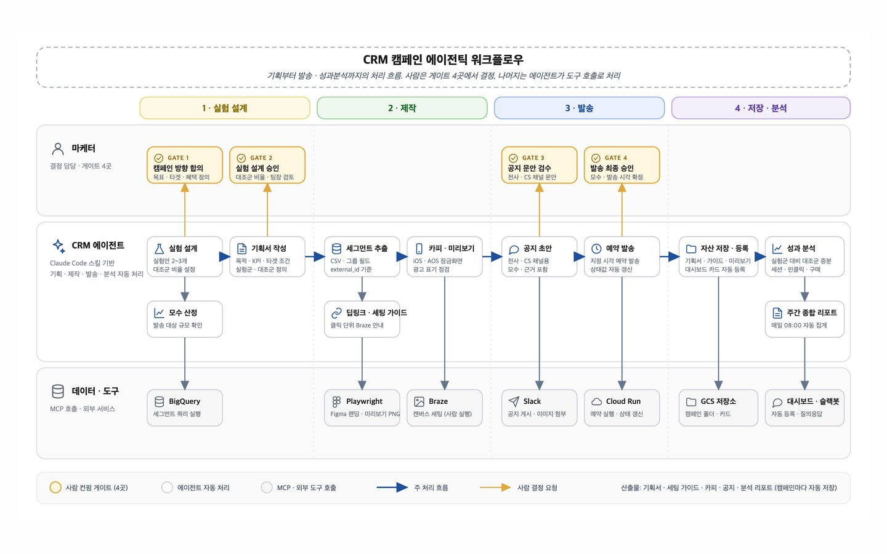

5장스윔레인: 마케터는 4개 게이트에서만 결정, 에이전트가 BigQuery·Braze·Slack·GCS를 호출해 처리
CRM AI 에이전트 시스템 구축
마케팅 담당자 부재에도 CRM 운영이 가능하도록 기획서·세팅 가이드·발송 공지·성과분석을 에이전트가 생성하고 사람은 게이트에서만 결정하는 체계
목적CRM 캠페인 기획·세팅·발송·성과분석 전 과정의 자동화
결과데이터 분석가 단독으로 CRM을 월 1건에서 주 6건까지 확대, 2026년 9월 MAU 102만으로 첫 100만 돌파(CRM 월평균 1.5만 명 기여)